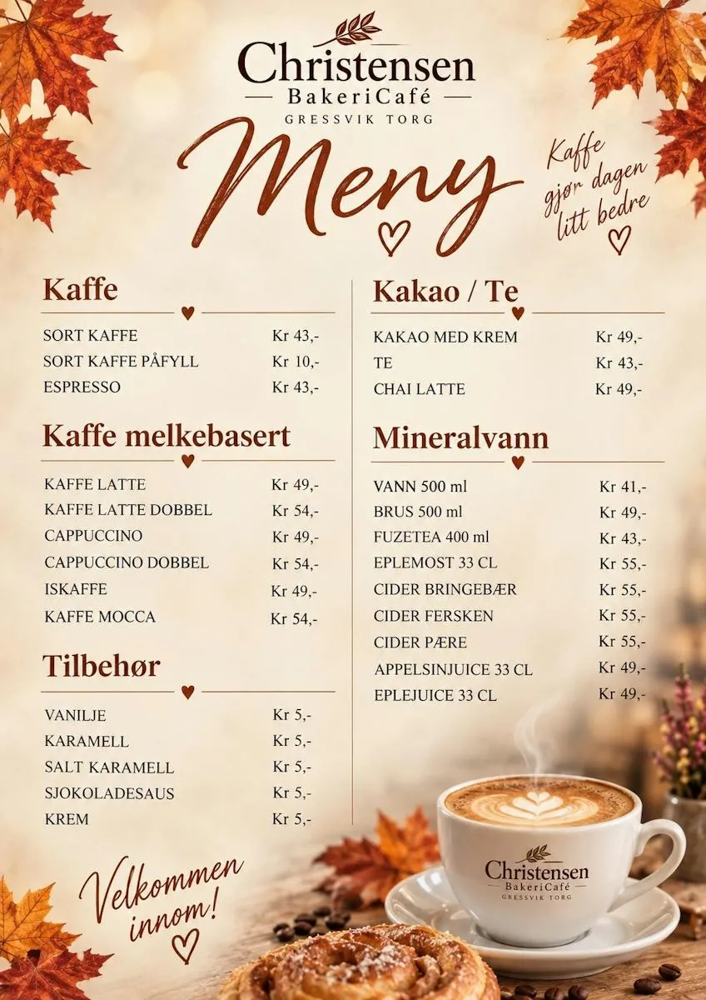

Forside/Om oss
Historien om Christensen
Historien om Christensen Bakeri og Konditori startet i 1923, som et lite bakeri i et ombygd vognskjul.
1923
Håndarbeid og kullovn
Den gang ble deigen eltet for hånd, og ovnene var underfyrt med kull. Melsekkene veide 100 kilo og måtte bæres opp trappene.
Vannet måtte hentes en kilometer unna i 50-liters spann – med kjerre om sommeren og kjelke om vinteren. Når bakervarene var ferdige, ble de fraktet ut til kundene med hest og kjerre eller på sykkel.

I dag
Mye har forandret seg
Etter mer enn 100 år med bakerihistorie lever fortsatt de gode tradisjonene videre.
| 1923 | Startet i et ombygd vognskjul, med håndeltet deig og kullfyrt ovn. |
|---|---|
| Gjennom generasjoner | Godt håndverk, gode råvarer og bakervarer kundene setter pris på. |
| Til januar 2026 | Drevet av tredje generasjon Christensen, ved Tom og hans kone Unni. |
| Januar 2026 | Produksjonsdelen ble solgt til Nærbakst, som har flere tradisjonsrike håndverksbakerier. |
Vil du vite mer?
Ta kontakt, eller stikk innom en av butikkene.